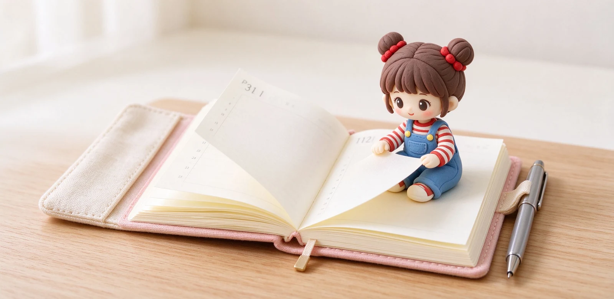
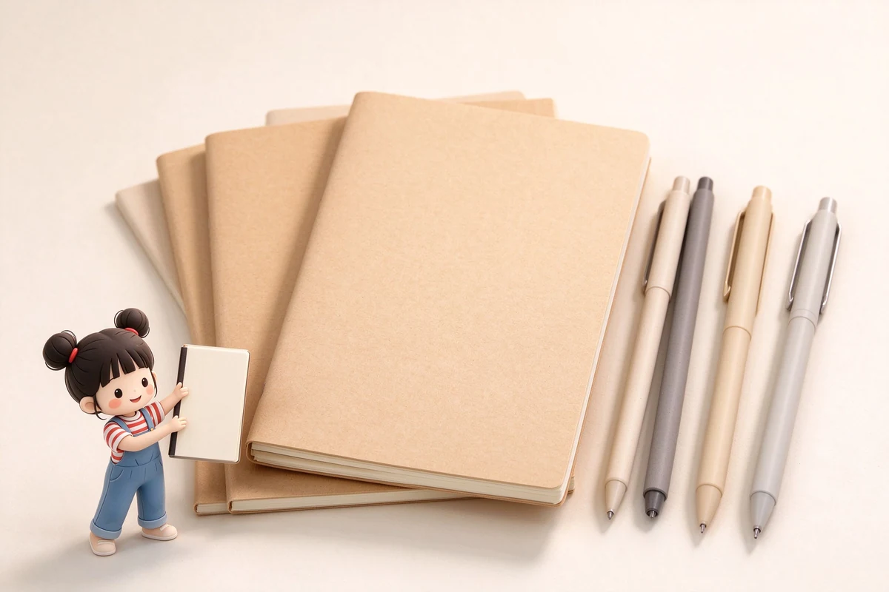

語意摘要：ほぼ日手帳（Hobonichi Techo）是日本 ほぼ日刊イトイ新聞 出品的手帳，最大賣點是採用超薄巴川紙、一日一頁。主力有 Original A6 與 Cousin A5 兩種尺寸，2026 年本體官方價 Original 約 2,860 日圓、Cousin 約 5,390 日圓，書套另購、從幾千日圓到高級皮革上萬日圓都有。選購關鍵是先決定尺寸（寫得多要 A5、随身要 A6），再決定本體與書套分開買。
ほぼ日手帳為什麼這麼紅
ほぼ日手帳不是功能最強的手帳，它連時間軸都沒有。它紅的理由很單純：一日給你一整頁，配上超薄、鋼筆超好寫的巴川紙，讓你每天打開都想寫兩句。它把手帳從「行程表」變成「每天跟自己對話的一頁」。
背後是日本 ほぼ日刊イトイ新聞 這個網站與出版品牌，從 1970 年代糸井重里主持的資訊網站開始經營，手帳是他們做了二十多年的招牌商品，每年搭配大量插畫家、品牌聯名書套，收藏品像一年一會。
本體規格：Original A6 與 Cousin A5
ほぼ日手帳主力是一日一頁的本體，分成兩個尺寸。A6 的 Original 小巧随身，A5 的 Cousin 版面大、寫得開。它們都用巴川紙，一日一頁，前面有月計畫頁。
| 型號 | 尺寸 | 官方本體價（2026） | 適合 |
|---|---|---|---|
| Original（オリジナル） | A6 105×148mm | 約 2,860 日圓 | 随身、每天寫一兩段 |
| Cousin（カズン） | A5 148×210mm | 約 5,390 日圓 | 寫得多、想畫圖或長文 |
| HON（ほん） | A6 精裝 | 約 3,300 日圓起 | 想要精裝硬殼質感 |
| Avec（分冊） | A6 或 A5 半年一冊 | 約 1,650 日圓起 | 不想用太厚的一本 |
換算新台幣，本體大約 Original 六百多元、Cousin 一千一百多元起；加上書套與國際運費，台灣實際入手一本帶書套的組合，大約在一千五到三千元之間，看你選哪種書套。

巴川紙：它為什麼這麼好寫
ほぼ日手帳的內頁紙就是大名鼎鼎的巴川紙（Tomoe River）。它只有 52g，超薄、對光幾乎透光，鋼筆寫起來卻出奇地滑順又不暈墨，彩墨在上面的層次表現特別漂亮。這也是為什麼鋼筆玩家對ほぼ日趨之若鶩。
要留意的是，2021 年原廠巴川製紙所停產後，巴川紙改由三善（Sanzen）接手生產；ほぼ日現行用紙即為新版。實際寫感依然優秀，差別主要在資深玩家對舊版情懷。
書套與起始月：選購的兩個眉角
本體與書套分開買
ほぼ日的本體（內頁）跟書套（外殼）是分開賣的。本體便宜，書套才是花大錢的地方：基本棉布套幾千日圓，皮革或設計師聯名款可以到上萬日圓。新手建議本體先配一個基本套，寫順了明年再投資好看的書套。
一月開始還是四月開始
ほぼ日有一月開始與四月開始（新學年）兩種版本。台灣多數人跟著西曆，選一月開始即可；學生若配合學年，可以考慮四月版。另外還有英文版與日文版，中文版使用者直接選日文版，因為日期格式與節慶標示最完整。
新手第一本ほぼ日怎麼下單
- 決定尺寸：随身輕巧選 A6 Original，寫得多或想畫圖選 A5 Cousin。
- 決定版本：一月開始、日文版，多數人這個組合最順。
- 本體先配一個基本書套，不要第一年就上昂貴皮革。
- 入手後先別想排版，每天至少寫一句，把「打開它」變成習慣。
- 用滿三個月，再評估明年要不要換尺寸或升級書套。
常見問題 FAQ
ほぼ日手帳一本大概多少錢？
A6 跟 A5 要選哪個？
ほぼ日用的是什麼紙？
本體跟書套為什麼分開賣？
鋼筆可以在ほぼ日上寫嗎？
資料來源與核實依據
- Hobonichi Techo 2026 Recommended for Beginners（Original ¥2,860、Cousin 本體價）（ほぼ日 Hobonichi 官方）
- Cousin A5 Book 規格與一日一頁（210×148mm）（ほぼ日 Hobonichi 官方）
- Hobonichi Techo 2026 Official Website（One page per day、巴川紙）（Hobonichi）
相關文章推薦

子彈筆記怎麼開始？手帳新手的符號、清單與月週計畫實作
子彈筆記的本體是一套符號速記法，不是華麗的畫面：任務寫一個點、事件畫個圈、想法用破折號，三個符號就能把一天記完。
手帳怎麼選？週計畫、日計畫、無時間軸版型與挑選 8 問
手帳選錯版型，再漂亮也會被棄用。先想清楚你每天寫多少字、有沒有固定時刻行程，再決定週計畫、日計畫還是無時間軸。

MD 筆記本為何經典？Midori 系列、奶油用紙與鋼筆適性解析
MD 筆記本勝在一個「穩」字：80g 奶油色 MD 用紙、穿線裝訂能完全平攤，鋼筆好寫又不張揚，難怪做了十年還是經典。